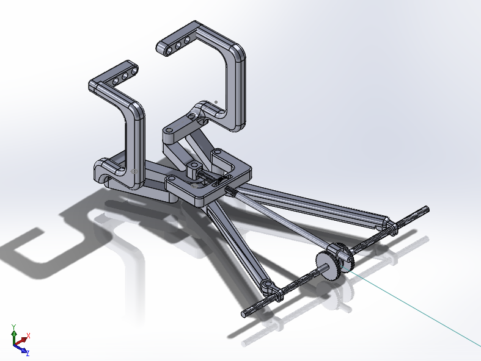

← projects
Orthopedic Surgical Retractor
A collaboration between orthopedic surgeons at Yale New Haven Hospital and a team of engineers to design a novel surgical retractor for use in traumatic fractures in the foot and ankle. The ongoing project has raised a combined $31,000 to date through the Rothberg Catalyzer Prototype Grant and the Connecticut Bioscience Pipeline Fund.
High-energy traumatic injuries in the ankles and feet often require the fractured bone to be distracted so that any damaged cartilage can be removed, and then retracted in order to let the bone pieces fuse together. It is of paramount importance to distract and retract the bone fragments such that they remain completely collinear, with the exposed faces parallel to each other. In distraction, this provides the surgeon sufficient access to remove all of the damaged cartilage; in retraction, this ensures a complete, healthy fusing of the bones. Unfortunately, providing such linear movements is near-impossible with the current instruments commonly found in operating rooms. Non-collinear distraction leads to inadequate bone surface cleaning, prolonged healing times, and a much greater chance for refracture due to incomplete bone fusion, while non-collinear retraction creates small pockets of space between the bone faces where they are not properly forced together. This provides room for scar tissue to form, leading to an overall weakening of the healed bone and increased potential for refracture.
Shown here is a design for a new type of orthopedic retractor, capable of providing the necessary collinear motions with a uniform force distribution due to its unique adjustable angle design. This tool will allow surgeons to more effectively treat high-energy traumatic injuries, decrease patient heal times, and reduce repeat injuries and procedures.